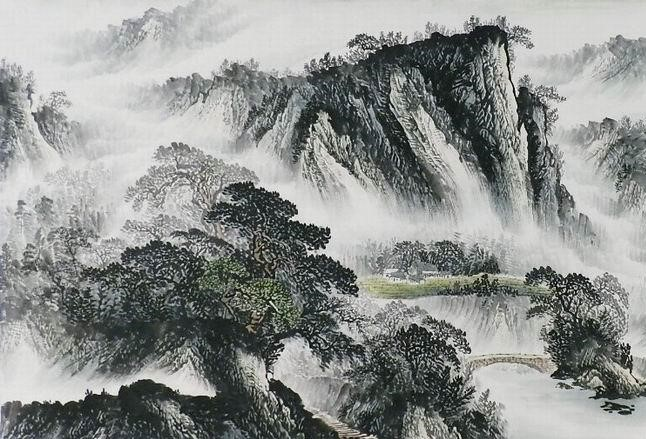

活动公告:
国内外重大书画展览及艺术活动信息——"本色·2021"当代油画精品展展览时间:2021年8月8日至8月16日展览地点:
昆山侯北人美术馆"本色·2021"当代油画精品展将于2021年8月8日在昆山侯北人美术馆举办,此次"本色·2021-当代
油画精品展"大部分为当代油画的经典力作;与此同时本次展览还收录了当代国画、版画大师的鼎力之作。
"灿烂的感性"吴松绘画作品展展览时间:2021年6月25日至7月12曰展览地点:今日美术馆著名香港艺术家吴松先生
"灿烂的感性——吴松绘画作品展"将于6月25日至7月12日在北京今日美术馆举行,展览将展出吴松先生近年来的绘画
精品21件.本次展览由今日美术馆主办,著名美术评论家,策展人彭锋先生担任学术主持.
________———书画作品———________

________———公司概况———________
书画鉴赏文化网发展有限公司，专业从事名人字画收藏、鉴定、评估、销售。致力于弘扬民族文化繁荣艺术市场。
赏苑多年来始终秉承诚实守信原则，依靠丰富的书画鉴赏知识及市场经验，去伪存真，筛选出较具价值潜力的作品服务于广大收藏爱好者。 查看更多
赏苑多年来始终秉承诚实守信原则，依靠丰富的书画鉴赏知识及市场经验，去伪存真，筛选出较具价值潜力的作品服务于广大收藏爱好者。 查看更多
________———新闻中心———________

水墨画是由水和墨调配成不同深浅的墨色所画出的画。
更多时候，水墨画被视为中国传统绘画，也就是国画的代表。也称国画，中国画。 墨水画是中国传统画之一。墨水是国画的起源，以笔墨运用的技法基础画成墨水画。 线条中锋笔，侧锋笔，顺锋和逆锋，点染，擦，破墨，拨墨的技法。墨于 水的变化分为五色。画成作品，题款，盖章。就是完整的墨水画作品。【详细】
2021-5-5
更多时候，水墨画被视为中国传统绘画，也就是国画的代表。也称国画，中国画。 墨水画是中国传统画之一。墨水是国画的起源，以笔墨运用的技法基础画成墨水画。 线条中锋笔，侧锋笔，顺锋和逆锋，点染，擦，破墨，拨墨的技法。墨于 水的变化分为五色。画成作品，题款，盖章。就是完整的墨水画作品。【详细】
2021-5-5
- 作家、艺术家走进内蒙古乌拉特前旗采风2021-5-5
- 《中华砚文化大典》出版工作座谈会在北京召开2021-5-5
- 山东临朐红丝砚精品展在北京华夏古玩城举行2021-5-5
- 河北美术《西游记》连环画补绘工程正式启动2021-5-5
- 陈履生：“一城三展”在深圳开幕2021-5-5
- 中国书协在济南举办**十五期专题研讨班2021-5-5
- 翰墨中原·河南省首届书法篆刻作品展在郑州升达艺术馆开展2021-5-5
________———收购流程———________
- 01
发送作品 - 02
当日回复 - 03
专家鉴定 - 04
沟通价格 - 05
上门交易